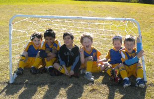

| Match Report - 03 July 2010 |
|
|
|
|
|
|
|
|
|
|
This was a great match in the first half with both teams competing well for the
ball and plenty of opportunities to score. Some great play and excellent on the
ball runs from this weeks piston cup holder Maxwell, delivered two nice goals
and fairly brought the White Ants in ahead at the half way point.

Ryde Saints only goal came at the end of the first half. A nice slow deflection
somehow managing to confuse the North Ryde defense who had a wall of three
players on the line.
The second half was a more one sided affair. Some silky soccer moves in attack
saw Toby net yet another hat-trick, joined by Max and Ashton with two to his
name. The team defended well to the Saints breaking runs with Ben making several
crucial tackles. Great hussle from Ryan and Oliver in the midfield made sure the
Saints didn't have a chance to think and the boys did a great job of marking up
on the set kicks. Final score, 8-1.
Well done, great concentration from everyone!

- Coach Duncan
|
|
|
|
|
|
This game had a real World Cup feel to it - a few interesting decisions by the
referee, plus many of us (parents & kids) seemingly half-asleep possibly from
staying up too late the night before.
Perhaps a few vuvuzelas could have helped here.
Anyway, an OK effort here by the team who all did their best. Christian picked
up a goal as always, and well done to Alexis for picking up the Player of the
Week award for her strong efforts in defence.
I hope everyone enjoys the a week break and comes out firing for the next match.
- Will
|
|
|
| U7 Green |
|
North Ryde 4 - All Saints Hunters Hill A 5
|
|
|
|
What a great match! The last time these teams played each other it ended up as
a 4 all draw and this game was just as good, even more so when the Ref got
nutmegged twice! Try to concentrate on the game when that happens next time,
boys, instead of laughing so much. I didn't find it amusing at all.

The boys lost by the odd goal in nine but played a great game full of skill and
verve, the pick being Tom "Bomb" Bain's turn and defence splitting pass to put
Finn in for the first goal, for which "Bomb" deservedly won man of the match.
Finn went on to score another two goals, officially earning the name of Team
Goalhanger, while Tom got the other.
This was all built on great defensive work by the whole team, Hamish and Will
especially patrolling the backline and making some great covering tackles and
then distributing the ball well. Anirrudh, who is in line for Most Improved
Player of the Year, had another great game winning and chasing lots of ball.
It was a hard game and without a substitute, as Evan, another star of a star
team, was away, the guys tired by the end but they didn't give up trying for
that elusive goal to draw the match. It was great to see all of the boys getting
their heads up to see what options were on and then deciding to pass, run or
shoot.
The result might not say it but the way you guys played the game was a win in
everyone's eyes! And remember boys have fun and... NUTTIES!!!
- Dave (Coach)
|
|
|
|
|
|
We lost. It was hard. Fletcher played well and so did Kate. Martin did really
good.
- Patrick Milne
|
|
|
|
|
|

It was an action packed game in the cold conditions at Magdala. Both teams were
evenly matched although a mainly defensive game for NRS which is how STU snuck
in a few quick goals.
The white bees had fun (as always) and decided that they would show everyone
at half time which goals they were going to score into by diving in them (as
seen in the picture).
The white bees played consistently well, especially when
the game was physical at times from over-excited STU players.
Kevin made a few great attacking moves as did Luca and Rishi. Oliver, Emily
and Cameron shows some strong tackling and passing. Our focus will be on
attacking, dribbling the ball and passing.
The player of the match this week went to Emily Duffy for trying her best and
making some great tackles this week.
Thank you to Sam for coaching and umpiring this week.
- Sarah Robson
|
|
|
|
|
|
This week we played Pacific Hills Dural at North Ryde Oval.
Well done team on a great effort this week. We played exceptionally well again
and were challenged by a great team with great skills and we learnt a lot from
their teamwork.
Final score was 10 - nil to Pacific Hills Dural. All of our team tried really
hard throughout the field and showed their true sportsmen ship from start to
finish and never gave up. Well done again to all of the team.
Huge thank you to Terry Boyd and Adrian Kennedy and Jenny Marquis and Janine
Boyd for running the canteen in the morning.
- George Munich
|
|
|
|
|
|
A cold and windy Monash Park played host to the North Ryde v West Ryde derby, when
the mighty Under 12-6's confirmed that they are a genuine team to be reckoned with
by securing their third win on the trot with a hard fought victory.
Statistically the boys went into the match on the back of 2 good wins plus an
earlier win in the season over their local West Ryde rivals. However the first
half was a tightly contested affair which saw North Ryde going into the break
at 2-1, but with the Rovers coming back hard.
Fortunately a rousing half time speech by Coach Jacob proved just the tonic and the
boys turned on the entertainment in the second half, which saw some great teamwork
around the park that lead to 2 more quality goals. Notable efforts were Will in
defensive mid; Alex with some great ball-playing for his strikers; Lucas, Connor
and K really tightening up in defence and supporting Dom in goals who pulled off
some great saves.
While special thanks go to the Lukas; Matt; Josh; and Nic from the U11's who helped
fill the team sheet and the goal sheet.
The deserving playing of the week was Andrew who continues to improve with every
match and this game was no different.
- David Hoy
|